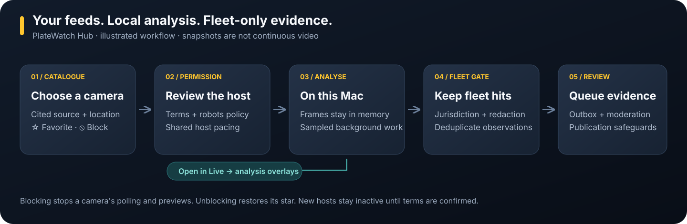
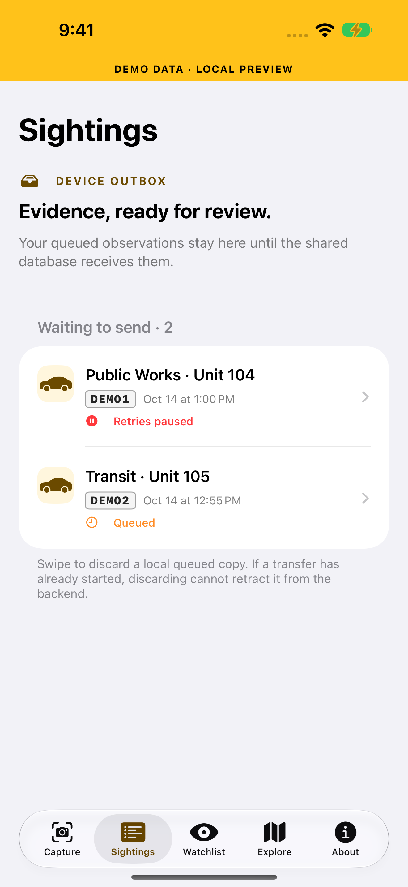
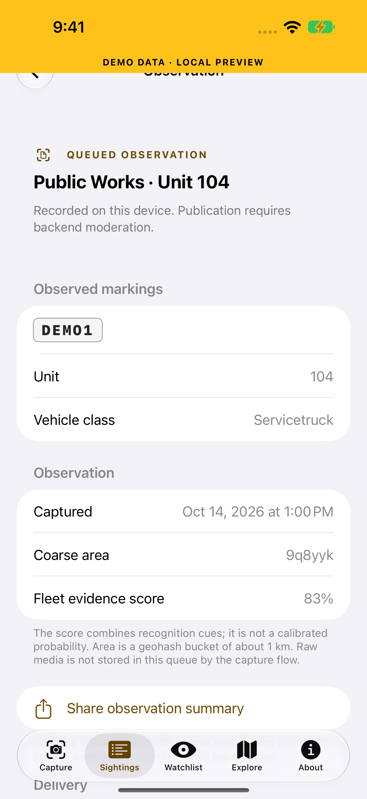
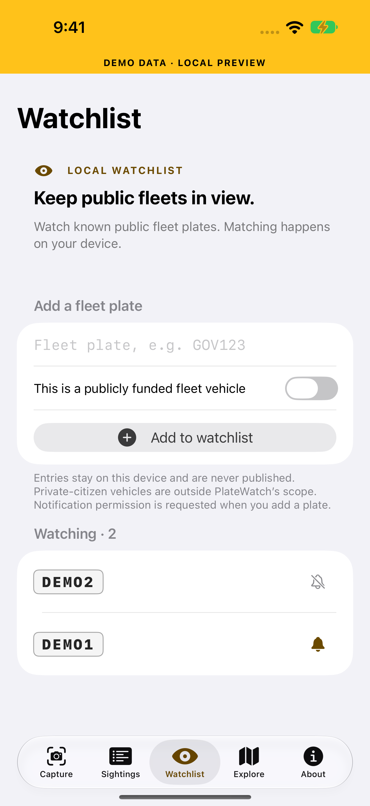
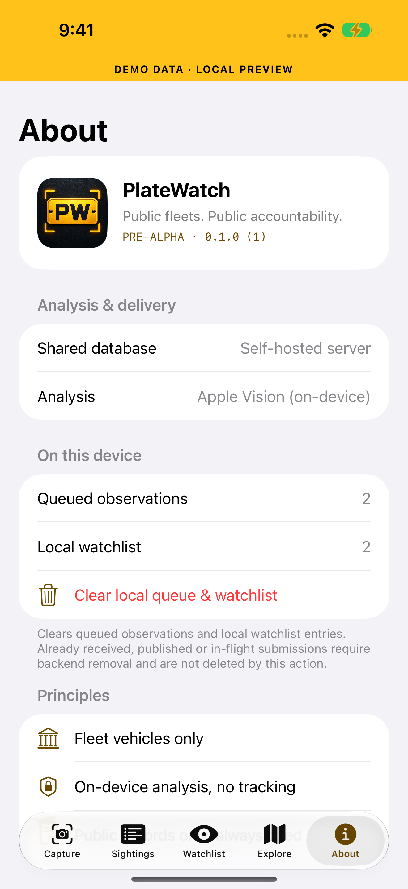

Watch the public fleet.
Watch the record.
PlateWatch is open accountability infrastructure. On-device recognition documents publicly funded vehicles — police, fire, transit, public works, federal fleets — from your phone today (Hub folder drops and reviewed snapshot feeds extend the source pipeline); the plan is for cited public records (rosters, FOIA releases, Brady lists, court dockets) to connect those vehicles to the officials who run them — that records program has not started. Public officials are not shielded from public scrutiny. Private citizens are out of scope by design.
Where the project stands
Updated October 14, 2026. The iOS review and visual handoff separates shipped UI from pilot blockers. Historical recognition results come from the October 13 photo corpus; this UI pass does not remeasure accuracy.
| Area | State | Notes |
|---|---|---|
| Recognition (real photos) | 100% precision | On 62 licensed US photos: 0 civilian false positives, 57% automatic recall on Mac and 59% on iPhone in the initial baseline; later configurations are documented in the evaluation report. Recall is the main thing still improving. Method & limits |
| Core packages | tested | Package and server checks run in CI. CaptureKit: 16 tests passed in the October 14 local pass. The badge below links the current remote result. |
| iOS app | pre-alpha | Inherited photo-import recognition; new observation detail, coarse-summary sharing, paused-retry recovery, fleet watchlist validation and alert controls, local cleanup, and painted icon. Simulator CloudKit startup trap fixed. Live camera still needs handheld field testing. |
| Reference server | tested in CI | Ingest, moderation, exports, k-anonymous heatmap, agency report. Not yet deployed publicly. |
| CloudKit backend | schema ready | Moderated two-tier design and schema written; waiting on the one-time import and production deploy. |
| CoreML models | optional detectors | SHA-pinned model registry and archive installation are implemented; availability and evaluation depend on the installed model. Built-in Vision remains the fallback. Model registry |
| macOS Hub | desktop console | Snapshot-feed background analysis, Open in Live overlays, favorites and reversible blocks, USA catalogue imports, moderator audit refresh and offline help. Continuous public video remains pending. Verification & next steps |
| watchOS · CarPlay | partial | Targets build in CI; physical watch alerts and CarPlay remain separate verification gates. |
One console for reviewed camera feeds.
Browse, search and sort cameras. Pin favorites, block unavailable views, and open a selected snapshot in Live to inspect its analysis overlays. Background work continues outside Live. Frames stay in memory; fleet observations pass the same privacy gates.

New imports: Oregon TripCheck, Utah UDOT GIS and New Mexico NMRoads. Existing imports: Austin, Caltrans, Washington and Iowa. Imports add metadata; new hosts remain inactive until terms review. Arizona, Nevada, Colorado and Alabama have access or verification gates described in the USA feed audit.
A clearer review workflow
Actual simulator screenshots of the October 14 build. The amber banner identifies synthetic, local preview data: these screens demonstrate the UI, not recognition accuracy, camera behavior or backend publication.




How it works
Everything sensitive happens on the device. Only structured, human-reviewable detections that clear a fleet-confidence gate ever sync.
Apple Neural Engine
Vision text recognition with optional installed CoreML detectors. Analysis stays on the device.
Fleet-only ingestion
A RedactionGate drops private-plate reads before upload; exact location is withheld until a vehicle is fleet-confirmed.
Provenance on everything
Enrichment — agency, unit, cost — carries a citation to a public record. No citation, no enrichment.
Portable by design
CloudKit for Apple devices, a Vapor REST reference server for everyone else, AGPL-3.0 throughout.
Non-negotiable principles
Encoded in the data layer, not just the docs.
Roadmap
Current focus is M-Alpha: make the core loop work end to end. Full list in the roadmap.
Make it work
- Deploy CloudKit schema
- Moderator publish tool
- Live-camera field test
- Fleet-specific classifier (recall)
- Finish field and accessibility audits
Identification depth
- Plate detector + OCR models
- Make/model/colour
- Plate-design classifier
- Vehicle re-ID
Network & UX
- Real heatmap & timeline
- Agency report card in-app
- Watchlist push to watchOS
- CarPlay passive mode
Sources & records
- iPhone-as-webcam + webcams (Hub)
- Validated continuous public-video feeds
- Official rosters, photos, Brady lists
- Cited cross-references
Beyond Apple
- Public REST mirror
- Raspberry Pi edge agent
- Android client
- Web explorer
Build it
Swift 6 · Xcode 27 · macOS 27 SDK. Contributions welcome — start with the QA report.
git clone https://github.com/noktirnal42/PlateWatch.git && cd PlateWatch swift test --package-path packages/PlateKit swift test --package-path server (cd apps/ios && xcodegen) && open apps/ios/PlateWatch.xcodeproj